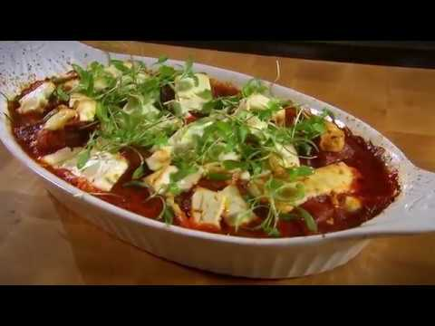

Go back to Homepage
Greek Style Meatballs

Ingredients
- 500g finely minced lamb (use 10% fat beef for a lower fat option)
- 1 small onion, finely chopped and fried until softened
- 1 garlic clove, finely chopped and fried until softened
- 7g fresh finely chopped parsley
- 50g white bread, crusts trimmed off, sliced and set to soak in a little milk
- Sprinkle of Knorr Aromat
- ½ egg
- 2tbsps plain flour
- 1tbsp olive oil
- 500ml Marco’s foolproof tomato sauce
- 75g feta cheese (crumbled into chunks) or mozzarella (cut into pieces)
To garnish:
- A little olive oil
- Fresh coriander sprigs
Instructions
- First prepare the meatball mixture. Place the minced lamb in a large mixing bowl. Add in the fried onion and garlic and the chopped parsley.
- Squeeze most of the milk out of the soaked bread and add the soaked bread to the mince mixture and egg. Adding soaked bread makes the meatballs soft and juicy.
- Season the mixture with Knorr Aromat, “the secret ingredient”.
- Using your hands, mix together all the ingredients thoroughly. Take your time at this stage; you want a nice smooth mixture with the flavourings evenly distributed through the mince.
- Now, cover the mince mixture and set it aside in the fridge to set for at least 1 hour. I like to make the mince mixture in the morning and use it that evening.
- Pre-heat the oven to 200˚C, 180˚C fan.
- Now make the meatballs. Put a little flour on your hands, pick up a bit of the minced lamb mixture and roll it into a ball.
- Repeat the process until all the minced lamb has been used. Make your meatballs as small or large as you wish. I like to make mine the size of small golf balls. The light flouring of the meatballs means that when you fry them they go a lovely golden brown colour and get a crispy coating.
- Heat the olive oil in a large frying pan and fry the meatballs for 10–15 minutes, turning now and then, until almost cooked through. Place the fried meatballs on kitchen paper to remove excess oil.
- Place 3–4 tbsps of the tomato sauce in the base of an ovenproof casserole dish and top with the meatballs. Spoon over remaining tomato sauce and sprinkle with crumbled feta cheese.
- Bake in the preheated oven for 10–15 minutes. Drizzle with a little olive oil when baked and garnish with coriander. Serve with rice, mashed potatoes or pasta.